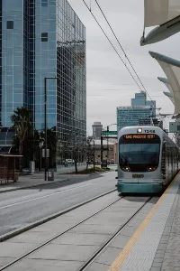
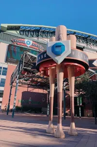
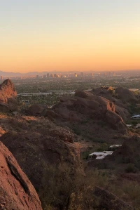

Historical Information
Beginning in 1888
Although Arizona was not yet a state, leading business owners in the Valley of the Sun organized the Phoenix Chamber of Commerce on November 13, 1888. The Phoenix Chamber originally spearheaded efforts towards attracting more settlers to the Valley, building a railroad to tap the rich forest country to the north, building better roads and supplying accommodations for those who traveled here for the winter sunshine.
Growing Industries in Arizona
This time also marked the beginning of the area’s citrus and agriculture industry. The Chamber began the processing of fruits and other products to offer a permanent display for visitors as proof of what the land could produce. If agriculture were to be a permanent success of the area, water storage to carry over during the summer months was crucial. A Chamber committee studied the possibilities of building dams on the Salt River to form reservoirs for water storage, and agreed unanimously upon the present site of the Roosevelt Dam. It was through the combined efforts of these businessmen and pioneer farmers that Congress was convinced to bring into effect the plan of reclamation to capture and hold precious water from the Colorado River.
Statehood
Arizona became the 48th state on February 14, 1912. After World War II, the area’s growth spurt began and returning soldiers flocked to the area for its great weather and employment opportunities. The Greater Phoenix Chamber saw a tremendous opportunity to promote Arizona as not only a fun-in-the-sun vacation destination, but an affordable place to work and raise a family.
Population Demographic Information
Income
- Population 1.445,632
- Area 517 sq. miles
- Median Age 37.1
- Average Household Income $58,514.00/yr
- Median Housing Value $157,000.00
Economic
- Unemployment Rate 7.9%
- Total Employment 92.1%
Current Imagery
  Calender
Tuesday April 6, 2021
Professional Women’s Alliance presents Compassion, Grief, and Leadership
Thursday April 8, 2021
Reimagining Today’s Workforce Series presents Rethinking Your Talent Sourcing Options
Tuesday April 13, 2021
Diversity & Inclusion Program Launch
Thursday April 15, 2021
Economic Development Insider Series presents New Horizons: The Future of Phoenix Sky Harbor International Airport
Friday April 30, 2021
Leading Through Recovery with Phoenix Mayor Kate Gallego
Tuesday May 4, 2021
Professional Women's Alliance: Growing and Developing Women Leaders